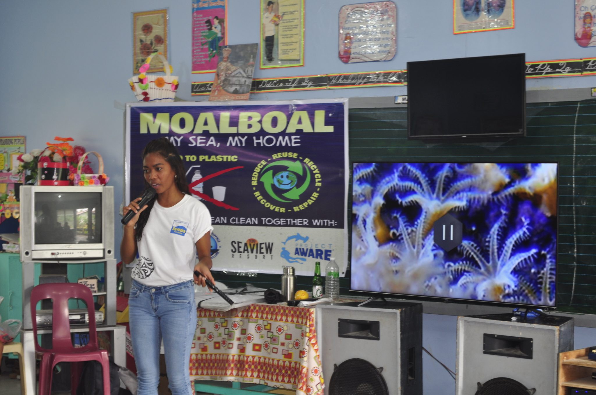
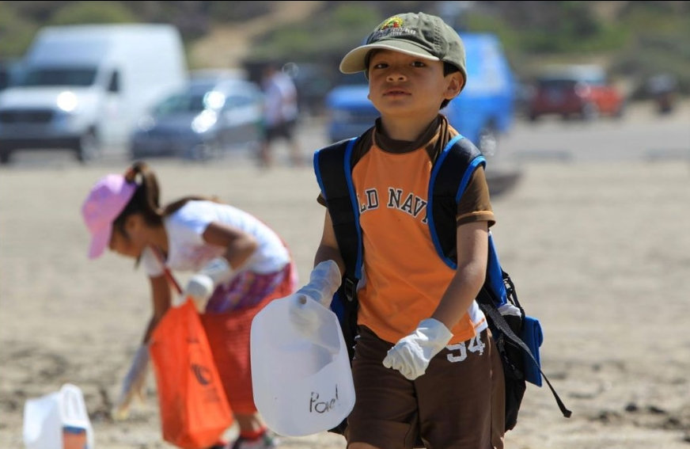
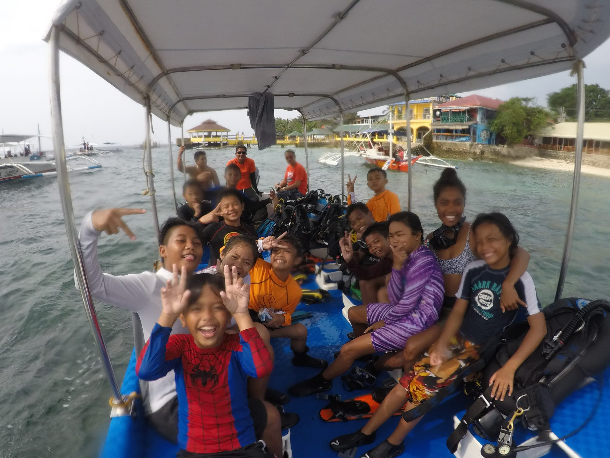
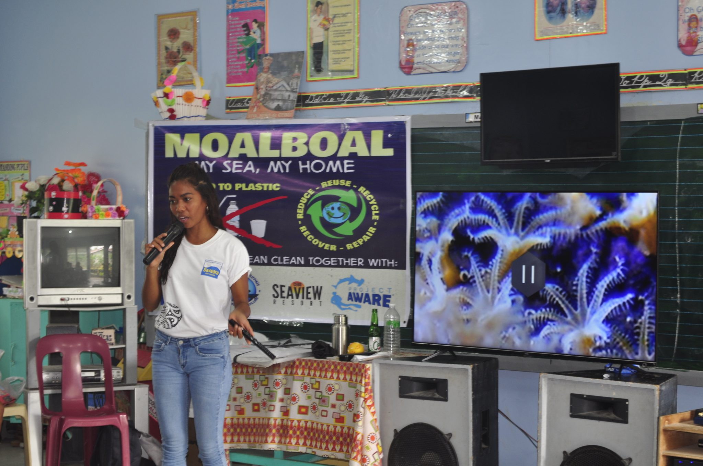
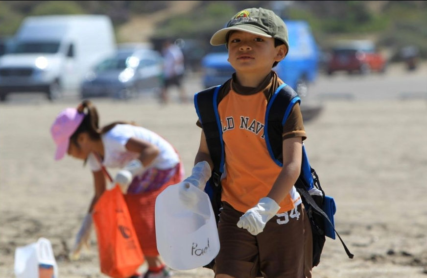
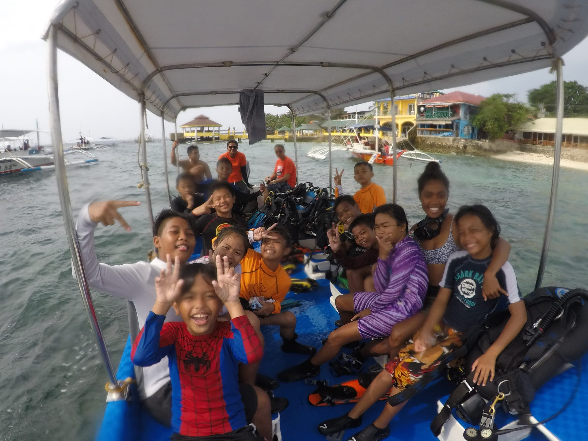

From Paradise to Polluted: The Ocean’s Hidden Crisis
The Philippines is facing a serious ocean waste problem. The country produces about 2.7 million tons of plastic waste each year, and around 20% of this ends up in the sea. This makes the Philippines one of the top contributors of marine litter in Asia (Lor, 2021). Plastic waste pollutes coastlines, damages coral reefs, and threatens marine animals that mistake it for food. Communities that depend on fishing also suffer because polluted waters reduce fish populations and harm their livelihoods. The growing problem of waste disposal in the ocean shows how deeply connected the health of the seas is to the well-being of the people.
The problem of plastic waste is both local and global. Each year, 19 to 23 million tons of plastic enter rivers, lakes, and oceans, adding to the 5.25 trillion plastic pieces already in the sea. This plastic often breaks down into microplastics, which are ingested by fish, turtles, and seabirds. Philippines shows a global issue and what happens on our shores affects the larger ocean system.
According to Global Alliance for Incinerator Alternatives (2019), this is the estimated number of plastic items used per person per year, and for the entire Philippines per day:
| Plastic Item | Per capita per year | Entire Philippines per day |
|---|---|---|
| Sachets | 591 | 163,732,476 |
| Plastic sando shopping bags | 174 | 48,125,613 |
| Plastic labo bags | 163 | 45,228,043 |
| Disposable diapers | 76 | 3,010,025 |
| TOTAL | 1,004 | 260,096,357 |
Now imagine, 20% of this enters the ocean contributing to the worsening of its condition. This shows one of the sad realities of the world and our country today. However, it is not too late.
What is currently being done?
The Philippines created ways to lessen waste disposal in the ocean. Firstly, it has created national policies to protect the ocean. One example is the Extended Producer Responsibility Act. This law requires companies to collect and recycle a percentage of their plastic packaging each year, aiming for 80% by 2028. There are other laws too like Ecological Solid Waste Management Act of 2000 and the National Plan of Action for the Prevention, Reduction, and Management of Marine Litter that can help in reducing trash by prevention, proper waste management, and sustainable practices. Second, the country collaborates with international programs like PEMSEA, which helps manage and protect the seas in East Asia. Third, there are ocean cleanup organizations such as Marine Conservation Philippines. They organize cleanups, build waste management systems, and work with local communitiesWhere we come in:
We are a non-profit cleanup organization dedicated to raising awareness among young Filipinos about the problems facing our oceans and helping to clean our shores at the same time. Our goal is to teach young people of all ages how they can contribute to cleaning our seas in simple yet effective ways, such as participating in cleanups or properly disposing of trash. They must understand that they can make a difference, no matter their age. We believe that guiding the next generation is essential for creating positive change and enabling them to do better than previous generations.
 




Dive Into Action — Help Us Clean Waste Today!
The ocean needs us more now than ever before. Every piece of trash contributes into worsening the condition of the big blue. So, let’s dive in and take action to help make even a small difference. Join our crew and be one of the future saviors of the ocean!
References:
- Lor, R. (2021, September 29). An Experiment on Satellite Remote Sensing of Plastic Waste in Pasig River | United Nations Development Programme. UNDP. https://www.undp.org/philippines/blog/experiment-satelliteremote-sensing-plastic-waste-pasig-river
- Earthday.org. (2024, July 9). How Our Trash Impacts the Environment. EarthDay. https://www.earthday.org/how-our-trash-impacts-theenvironment/
- Lew, V. (2020, September 28). Coastal clean-up by Creative O Preschoolers’ Bay - Jane Goodall Institute (Singapore). Jane Goodall Institute (Singapore). https://janegoodall.org.sg/coastal-clean-up-by-creative-o-preschoolers-bay/
- Entropyglo, & Entropyglo. (2022, September 12). Kids Ocean Day. Entropy Resins. https://entropyresins.com/blog/2022/03/31/kids-ocean-day/
- McConnell, B. (2020, June 18). My Sea – My Home: Social Awareness program educates students on ocean conservation in Moalboal, Philippines. - PADI Blog – Latest Scuba Diving News, Events, Blogs, Articles & More. https://blog.padi.com/my-sea-my-home-social-awareness-program-educates-students-on-ocean-conservation-in-moalboal-philippines/
- GAIA. (2025, January 10). Plastic - GAIA. GAIA -. https://www.no-burn.org/plastic/